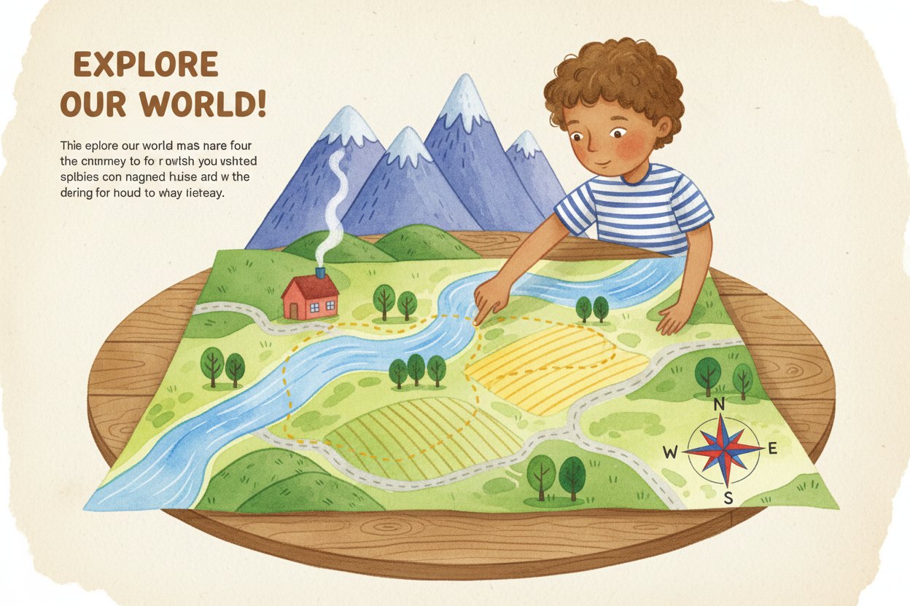
gr a 26 cover
/guided-reading/covers/gr-a-26-cover.png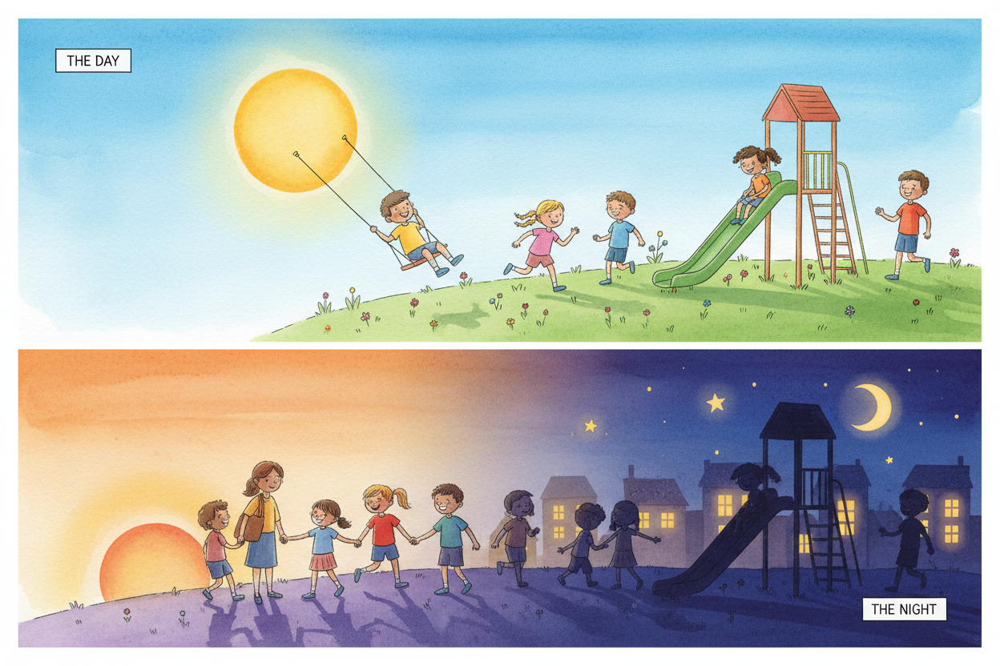
gr a 27 cover
/guided-reading/covers/gr-a-27-cover.png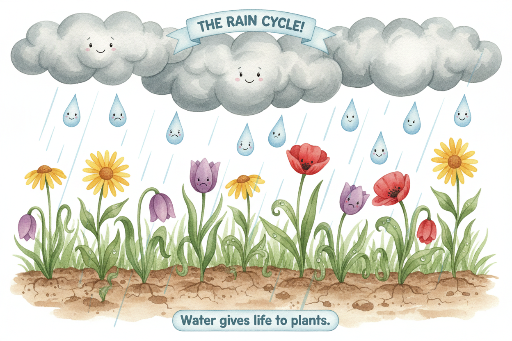
gr a 28 cover
/guided-reading/covers/gr-a-28-cover.png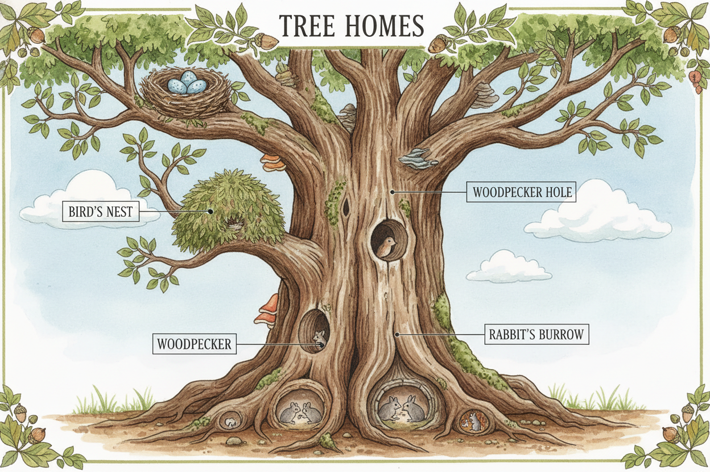
gr a 29 cover
/guided-reading/covers/gr-a-29-cover.pnggr a 30 cover
/guided-reading/covers/gr-a-30-cover.png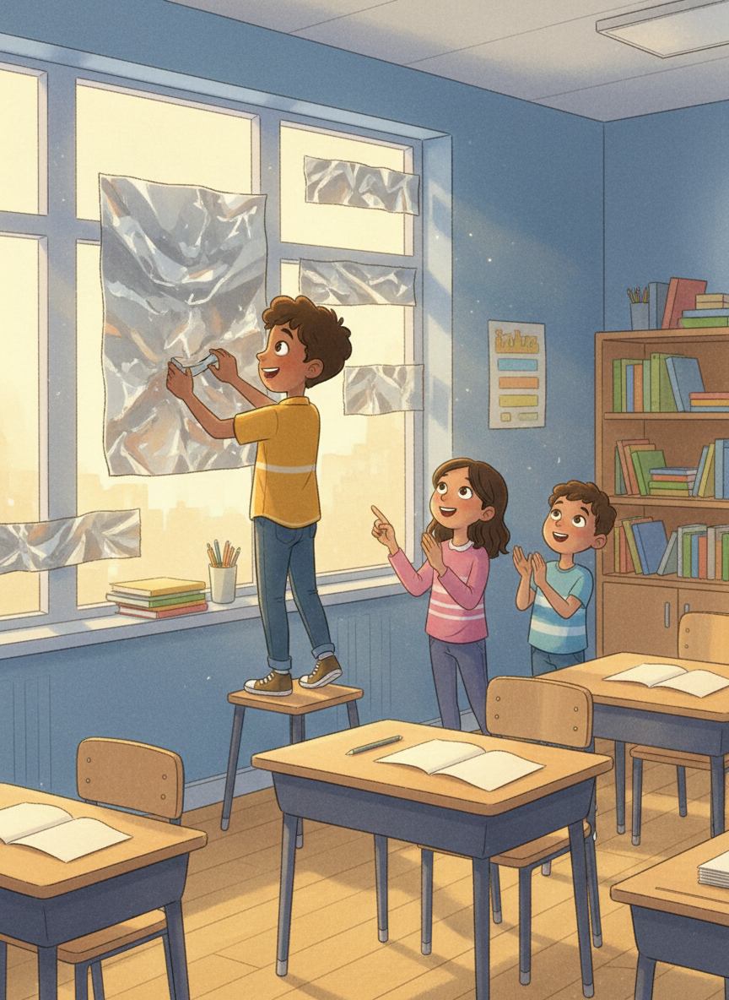
gr b 10 cover
/guided-reading/covers/gr-b-10-cover.png
gr b 31 cover
/guided-reading/covers/gr-b-31-cover.png
gr b 32 cover
/guided-reading/covers/gr-b-32-cover.pnggr b 33 cover
/guided-reading/covers/gr-b-33-cover.png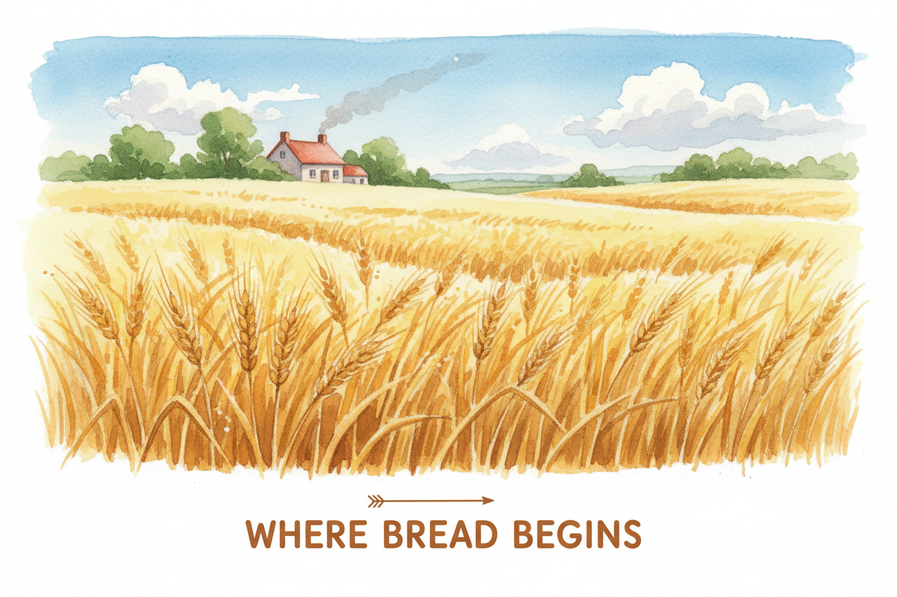
gr b 34 cover
/guided-reading/covers/gr-b-34-cover.png
gr b 35 cover
/guided-reading/covers/gr-b-35-cover.pnggr c 37 cover
/guided-reading/covers/gr-c-37-cover.pnggr c 38 cover
/guided-reading/covers/gr-c-38-cover.pnggr c 39 cover
/guided-reading/covers/gr-c-39-cover.png
gr c 40 cover
/guided-reading/covers/gr-c-40-cover.pnggr d 20 cover
/guided-reading/covers/gr-d-20-cover.png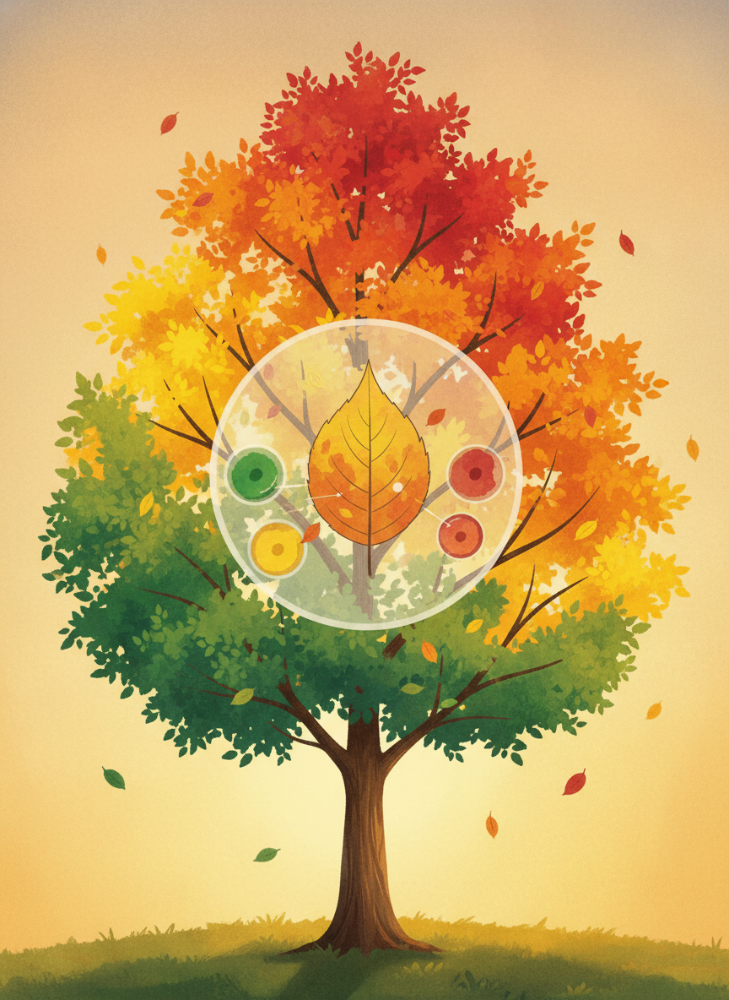
gr d 42 cover
/guided-reading/covers/gr-d-42-cover.png
gr d 43 cover
/guided-reading/covers/gr-d-43-cover.pnggr d 44 cover
/guided-reading/covers/gr-d-44-cover.pnggr d 45 cover
/guided-reading/covers/gr-d-45-cover.png
gr e 46 cover
/guided-reading/covers/gr-e-46-cover.png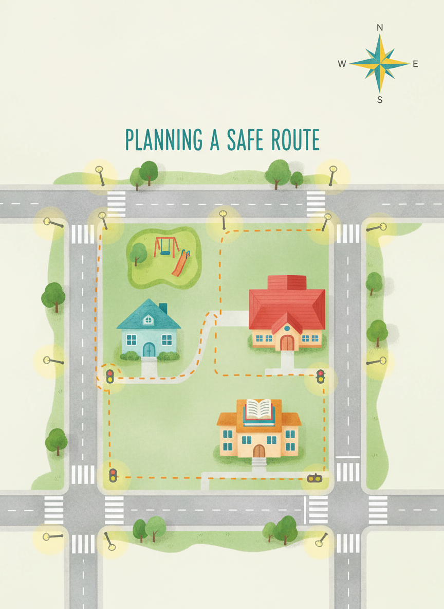
gr e 47 cover
/guided-reading/covers/gr-e-47-cover.png
gr e 48 cover
/guided-reading/covers/gr-e-48-cover.png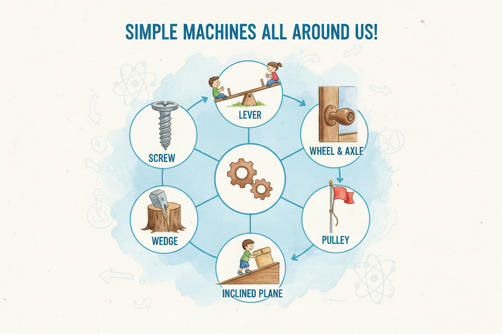
gr e 49 cover
/guided-reading/covers/gr-e-49-cover.pnggr e 50 cover
/guided-reading/covers/gr-e-50-cover.png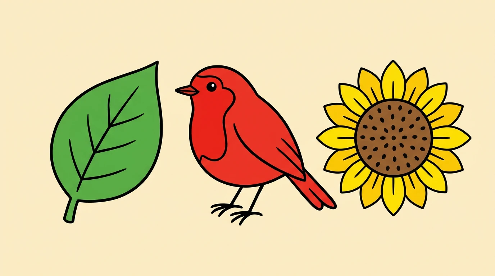
cover
/guided-reading/nonfiction/first-facts/book-01/cover.webppage
/guided-reading/nonfiction/first-facts/book-01/page-001.webppage
/guided-reading/nonfiction/first-facts/book-01/page-002.webppage
/guided-reading/nonfiction/first-facts/book-01/page-003.webppage
/guided-reading/nonfiction/first-facts/book-01/page-004.webppage
/guided-reading/nonfiction/first-facts/book-01/page-005.webppage
/guided-reading/nonfiction/first-facts/book-01/page-006.webppage
/guided-reading/nonfiction/first-facts/book-01/page-007.webpcover
/guided-reading/nonfiction/first-facts/book-02/cover.webppage
/guided-reading/nonfiction/first-facts/book-02/page-001.webppage
/guided-reading/nonfiction/first-facts/book-02/page-002.webppage
/guided-reading/nonfiction/first-facts/book-02/page-003.webppage
/guided-reading/nonfiction/first-facts/book-02/page-004.webppage
/guided-reading/nonfiction/first-facts/book-02/page-005.webppage
/guided-reading/nonfiction/first-facts/book-02/page-006.webppage
/guided-reading/nonfiction/first-facts/book-02/page-007.webppage
/guided-reading/nonfiction/first-facts/book-02/page-008.webppage
/guided-reading/nonfiction/first-facts/book-02/page-009.webpcover
/guided-reading/nonfiction/first-facts/book-03/cover.webppage
/guided-reading/nonfiction/first-facts/book-03/page-001.webppage
/guided-reading/nonfiction/first-facts/book-03/page-002.webppage
/guided-reading/nonfiction/first-facts/book-03/page-003.webppage
/guided-reading/nonfiction/first-facts/book-03/page-004.webppage
/guided-reading/nonfiction/first-facts/book-03/page-005.webppage
/guided-reading/nonfiction/first-facts/book-03/page-006.webppage
/guided-reading/nonfiction/first-facts/book-03/page-007.webpcover
/guided-reading/nonfiction/first-facts/book-04/cover.webppage
/guided-reading/nonfiction/first-facts/book-04/page-001.webppage
/guided-reading/nonfiction/first-facts/book-04/page-002.webppage
/guided-reading/nonfiction/first-facts/book-04/page-003.webppage
/guided-reading/nonfiction/first-facts/book-04/page-004.webppage
/guided-reading/nonfiction/first-facts/book-04/page-005.webp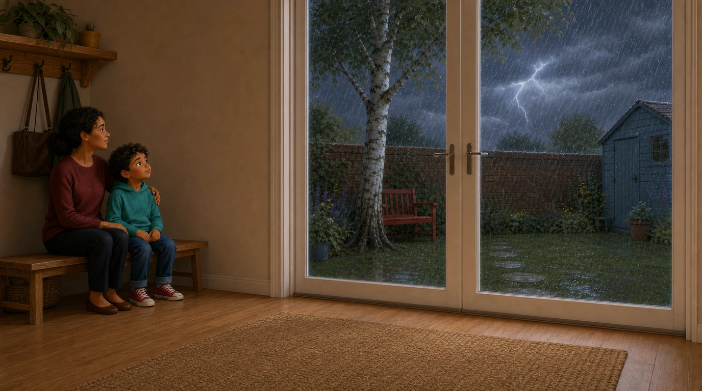
page
/guided-reading/nonfiction/first-facts/book-04/page-006.webppage
/guided-reading/nonfiction/first-facts/book-04/page-007.webp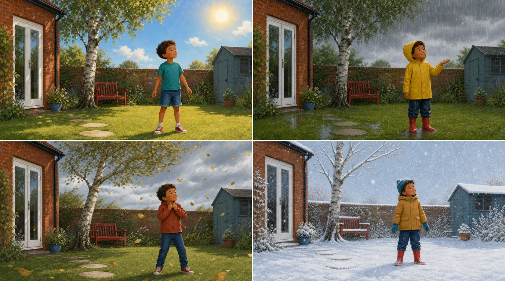
page
/guided-reading/nonfiction/first-facts/book-04/page-008.webpcover
/guided-reading/nonfiction/first-facts/book-05/cover.webppage
/guided-reading/nonfiction/first-facts/book-05/page-001.webppage
/guided-reading/nonfiction/first-facts/book-05/page-002.webppage
/guided-reading/nonfiction/first-facts/book-05/page-003.webppage
/guided-reading/nonfiction/first-facts/book-05/page-004.webppage
/guided-reading/nonfiction/first-facts/book-05/page-005.webppage
/guided-reading/nonfiction/first-facts/book-05/page-006.webppage
/guided-reading/nonfiction/first-facts/book-05/page-007.webppage
/guided-reading/nonfiction/first-facts/book-05/page-008.webpcover
/guided-reading/nonfiction/first-facts/book-06/cover.webppage
/guided-reading/nonfiction/first-facts/book-06/page-001.webppage
/guided-reading/nonfiction/first-facts/book-06/page-002.webppage
/guided-reading/nonfiction/first-facts/book-06/page-003.webppage
/guided-reading/nonfiction/first-facts/book-06/page-004.webppage
/guided-reading/nonfiction/first-facts/book-06/page-005.webppage
/guided-reading/nonfiction/first-facts/book-06/page-006.webppage
/guided-reading/nonfiction/first-facts/book-06/page-007.webppage
/guided-reading/nonfiction/first-facts/book-06/page-008.webpcover
/guided-reading/nonfiction/first-facts/book-07/cover.webppage
/guided-reading/nonfiction/first-facts/book-07/page-001.webp